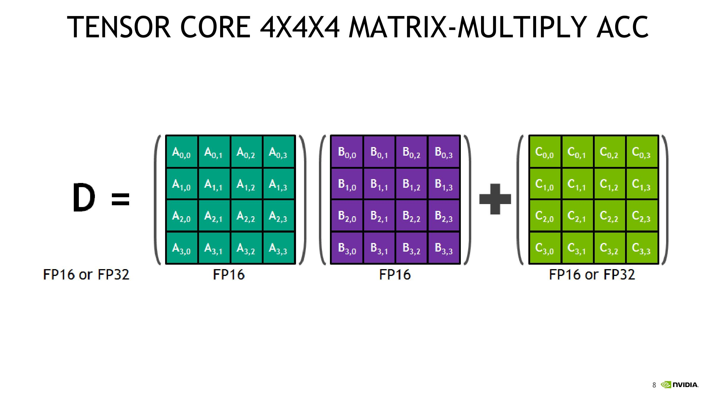
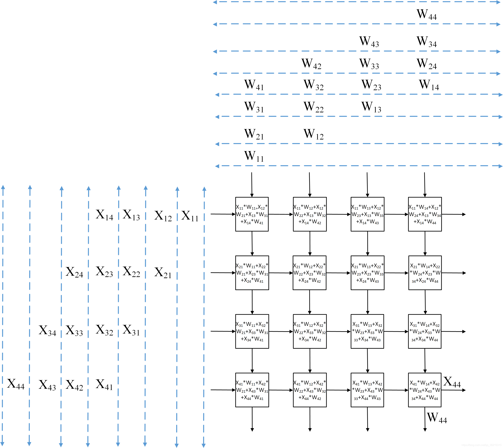
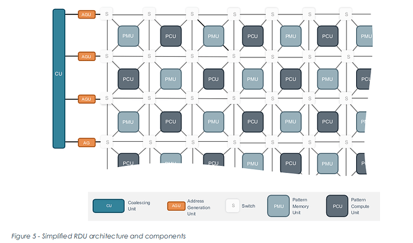
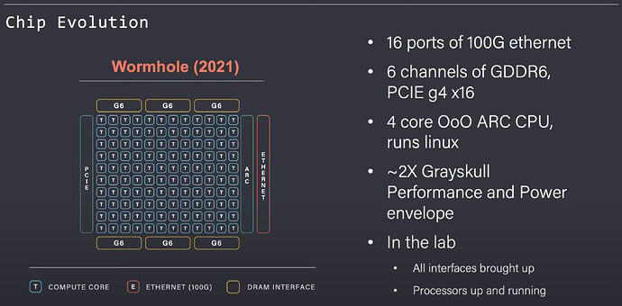

主流架构分析#
导读
本章节将深入剖析主流AI芯片的技术架构，涵盖 NVIDIA GPU、Google TPU、Graphcore IPU、SambaNova RDU 及 Cerebras WSE 等。我们将详细阐述各自的架构特色、技术演进脉络，并重点分析其与数据流思想的异同。
NVIDIA GPU#
核心思想演进：NVIDIA GPU 的基石是 SIMT (单指令多线程) 控制流模型，通过上万线程的并发执行隐藏数据访问延迟。然而，面对AI负载中日益增长的“内存墙”问题，其架构正清晰地向“通用控制流+专用数据流”的混合模式演进。GPU不再仅仅依赖线程并发，而是引入了越来越多数据流风格的专用硬件与显式数据搬运机制。
架构演变脉络：
Tesla - 控制流范式的奠基：Tesla架构是NVIDIA发展史的分水岭。它首次引入 统一渲染架构，将过去分离的、专用的顶点和像素处理单元，统一为通用的 CUDA核心。更重要的是，它确立了 SIMT (单指令多线程) 的执行模型。这套组合拳将GPU从一个固定功能的图形管线，彻底转变为一个高度灵活的、由指令驱动的并行 控制流计算引擎，为GPGPU时代奠定了基石。
Fermi - 硬件缓存的引入：Fermi架构首次为GPU引入了类似CPU的 L1/L2缓存。这是典型的控制流解决“内存墙”的思路——通过硬件管理的缓存来隐藏访存延迟。同时，它引入的 GPUDirect 技术，首次允许GPU在不经过CPU的情况下直接通信，这是优化系统级 数据流动 效率的早期尝试，为后来更高效的多卡互联技术埋下了伏笔。
Volta - 专用数据流引擎的引入：首次引入 Tensor Core。这是GPU架构演进的里程碑。Tensor Core 是一个专为矩阵乘加（GEMM：D=A×B+C）设计的 专用数据流引擎，它以固定流水线高效处理数据，是数据流思想在GPU内部的首次硬件化实现。
Tensor Core工作原理：
微型数据流处理器: Tensor Core 本质上是一个 高度特化、不可编程的微型数据流处理器。与执行单一指令的CUDA Core不同，Tensor Core由一条上层指令触发后，会在内部自动执行一个固定的、由硬件定义的矩阵乘加数据流图。
局部数据复用: 输入的矩阵块被加载到其专用的内部寄存器后，数据会在其内部的乘法器和加法器阵列中流动和复用，一次性完成整个块的计算。中间的部分和过程结果始终保持在Core内部，直到最终结果累加完成。这完美体现了数据流架构“最大化片上复用，最小化数据搬运”的核心思想。
混合精度计算: 其广泛采用的 混合精度计算 模式（例如，FP16输入相乘，FP32累加）是支撑这种高吞吐量数据流设计的关键技术，它在保证数值精度的同时，大幅降低了对内存带宽的需求。

上图示意了Tensor Core在执行混合精度矩阵乘加时的典型数据流：低精度输入（如FP16）被加载到本地寄存器和专用乘加阵列中，以高度流水化的方式完成大规模乘法运算，而累加过程则在更高精度（如FP32）的累加寄存器中进行。通过在硬件中固化这种“低精度乘法 + 高精度累加”的模式，能显著提升单位带宽的算力。
引入Tensor Core的意义:
效率提升: 其数量级的效率提升，根源于这种数据流设计。它将通用CUDA Core需要执行的数十条独立的加载、乘法、加法、存储指令，聚合为硬件内部的一次自动化数据流动过程，极大地减少了指令调度、寄存器文件访问和数据移动的开销。
架构的决定性转变: 这一设计标志着GPU从纯粹的通用SIMT（单指令多线程）架构，向 “通用SIMT + 专用数据流引擎” 的混合架构演进。GPU不再只依赖于“更多、更快的通用核心”，而是通过嵌入专用数据流硬件来加速AI等领域的核心计算负载。
Hopper (数据流思想的深化) - 显式数据移动与领域专用数据流：Hopper架构将数据流思想的融合推向了新的高度。 1. Transformer 引擎：软硬协同的专用数据流系统
硬件层面：Hopper 在 Tensor Core 及其周边控制逻辑中集成了针对 Transformer 工作负载优化的 数据流执行路径，原生支持FP8/BF16等混合精度格式以及缩放因子管理等机制，用以高效完成Attention和MLP等关键算子。
软件层面与数据流关系： Transformer Engine (TE) 软件库 则是这套软硬协同方案的 编程接口与训练优化库。运行时，它将底层Tensor Core对FP8的支持与上层应用（如PyTorch）连接起来，其数据流体现在：
显式的数据流区域定义: 当开发者使用 with te.fp8_autocast(…) 这样的API时，他们实际上是在代码中 显式地声明了一个计算区域。TE库会捕获这个区域内的所有计算，并将其作为一个整体的 子图 (Subgraph)。
自动映射到硬件数据流：可以直观地理解为把PyTorch 代码翻译成 Hopper 硬件能直接高效执行的形式。TE 库会负责把这个子图铺到芯片内部的数据流通路上，同时自动选择合适的 FP8 缩放因子并调用最合适的融合 Kernel，这些底层细节都对开发者透明。
抽象与自动化: 这个过程将原本需要开发者手动管理的数十个底层操作（精度转换、数值缩放、矩阵乘、非线性激活等），抽象并自动化 为一个单一的、高效的硬件执行流程。这正是“图算融合”和数据流思想的精髓——将一个计算图优化并执行在最适合它的专用硬件上，对用户隐藏底层复杂性。
下面是一个PyTorch中的代码示例，直观地展示了开发者如何定义一个FP8计算区域：
import torch import transformer_engine.pytorch as te from transformer_engine.common import recipe # 初始化模型和输入张量。 model = te.Linear(in_features=768, out_features=3072) inp = torch.randn(2048, 768, device="cuda") # 创建一个用于延迟缩放的 FP8 配置（recipe）。 fp8_recipe = recipe.DelayedScaling(fp8_format=recipe.Format.E4M3) # 启用 FP8 自动混合精度，以显式定义映射到硬件引擎上的数据流计算区域。 with te.fp8_autocast(enabled=True, fp8_recipe=fp8_recipe): out = model(inp)
在这个例子中，
with te.fp8_autocast(...)上下文管理器所包裹的代码块，就是被TE库识别并整体调度到专用硬件数据流引擎上执行的计算子图。
Tensor Memory Accelerator (TMA)：TMA允许在共享内存和全局内存之间进行 异步、显式的块数据传输。TMA像一条可编程的数据通路，把这些块沿着预先规划好的路径推送到指定位置。从数据流的角度看，TMA 把原来由缓存自动完成的数据转移变成了可见、可调度的 块级数据流，计算线程只消费本地缓冲中的数据，数据在片上以流水线方式不断前推，这极大地提升了对片上数据流水的规划能力与效率。
后续演进 (Blackwell等)：延续并强化了“通用控制+专用数据流”的混合架构路线。以Blackwell架构为例，其搭载的第二代Transformer引擎进一步增强了对FP4/FP6等微精度格式的支持，并引入了专门的片上网络交换结构，再次印证了通过专用数据流硬件加速关键工作负载，并赋予软件更大控制权限的演进趋势。
与纯数据流架构的同异：
异：GPU 的根基仍是SIMT控制流，保留了极高的编程灵活性和通用性；而纯数据流架构（如SambaNova RDU）则完全由数据的可用性驱动计算。GPU是“指令驱动+数据流辅助”，后者是“数据完全驱动”。因此，GPU存在“图算分离”问题：计算图的调度依赖CPU和驱动，每个算子（Kernel）作为一个独立的控制流单元被启动，算子间的衔接（数据回写和再读取）会产生大量开销。
同：两者都致力于解决“内存墙”问题。GPU通过引入Tensor Core、TMA等来最大化片上计算和数据复用，这与数据流架构的核心目标——“最大化本地性”是完全一致的。
趋势：GPU沿着“通用可编程性 + 专用数据流加速”的混合路线演进。一方面，CUDA核心将继续为通用和非主流算子提供灵活性；另一方面，更多针对主流模型（如LLM、MoE）的专用数据流硬件将被集成，同时软件层面（如CUDA Graph, Triton）将提供更多显式控制数据流动的能力，让编译器和开发者能更深地参与到性能优化中。
Google TPU#
核心思想：TPU是一种 领域专用架构 (DSA)，其核心是硬件化的数据流计算模式。但它并非理论上的“纯”数据流机器，而是一个由 指令驱动的、静态调度的混合架构。
混合架构的本质：
数据流核心（MXU）：其脉动阵列(Systolic Array)设计是数据流思想的极致体现。数据在阵列中规律地流动和计算，实现了极高的数据复用和计算效率。
控制流驱动：然而，整个TPU的运作是由宿主CPU（Host）启动，并由其片上控制器执行一个预先编译好的、VLIW风格的指令序列来精确协调其内部的各个单元。因此，是“指令”在宏观上调度“数据流”，而非数据自发驱动计算。

上图展示了TPU中典型的脉动阵列结构：输入矩阵A和B的元素分别沿着阵列的行与列方向在MAC单元阵列中“脉动”传输，每个乘加单元在接收到来自上游和左侧的数据后立即执行乘加运算，并将部分和沿着阵列方向继续传递。通过这种方式，同一行/列的数据会在阵列内部被多次复用，大量乘加操作得以高度流水化地并行展开，极大减少了对片外内存的访问需求，充分体现了数据流架构中“让数据在阵列中流动、让计算紧随数据而动”的设计思想。
架构演进与关键模块：
TPUv1 (奠基)：作为推理加速器，确立了 MXU + 片上统一缓冲 (Unified Buffer) 的基本模式，采用INT8精度，由CPU通过PCIe接口下发指令。
TPUv2/v3 (迈向训练与系统级数据流)：这是决定性的一步。引入了 HBM高带宽内存 和 BF16/FP32 浮点计算能力以支持模型训练。最关键的创新是引入了 ICI (Inter-Chip Interconnect) 高速片间互联网络。ICI将数十上百个TPU芯片连接成一个 TPU Pod，形成一个巨大的、分布式的 系统级数据流机器。数据可以在不同芯片的计算核心间高效流动，摆脱了单芯片的限制。
TPUv4及后续 (性能与灵活性的深化)：持续提升MXU算力、内存带宽和ICI网络速度。TPUv4i和最新的TPUv5p等型号，不仅在峰值性能上大幅超越前代，也持续优化ICI网络拓扑与带宽，并增强了周边向量与标量单元的可编程性，以处理日益复杂的非矩阵运算。这标志着TPU从一个相对固化的ASIC，演变为一个算力强大且灵活性不断增强的 可扩展计算集群。
编译器(XLA + MLIR)：TPU的强大高度依赖 XLA (Accelerated Linear Algebra) 编译器。XLA将高层计算图（如TensorFlow/PyTorch图）完整地编译成底层的、静态的指令序列，精确规划好每一个周期的数据流向和计算任务，实现了极致的 “图算一体”，最大化硬件效率。值得注意的是，XLA正越来越多地采用MLIR作为其中间表示（IR），利用MLIR的方言（Dialect）机制来更好地表示和优化高层计算图，然后再降级到TPU专属的底层表示。
趋势总结：TPU的演进路线，是从一个单芯片的、以数据流为核心的推理引擎，发展成为一个由控制流指令静态调度的、通过高速网络将众多数据流核心连接起来的 大规模、可编程、系统级的数据流计算平台。
IPU (Graphcore)#
核心思想：MIMD (多指令多数据流) + 分布式片上内存。IPU 将芯片划分为上千个独立的处理器核心（Tile），每个Tile拥有自己的本地SRAM和计算单元，并能执行独立的指令流。它彻底抛弃了GPU的硬件缓存一致性，强调 数据的显式放置和通信。
架构要点：
大规模Tile：上千个核心，每个都能独立工作，非常适合处理具有不规则并行性的任务（如图神经网络、稀疏计算）。
完全分布式的SRAM：数据被编译器显式地划分并放置到每个Tile的本地内存中，计算也只在本地内存上进行。这最大化了数据局部性，实现了超高片上带宽和极低功耗。
显式通信：当核心间需要数据交换时，必须通过 BSP (块同步并行) 模型由编译器在软件（Poplar）中进行显式、可预测的数据同步与搬移。这避免了硬件缓存一致性的开销和不确定性。
从程序执行的角度看，BSP在IPU上的作用可以理解为 计算-通信-同步 三个阶段：
本地计算 (Compute)：在一个阶段内部，每个Tile只访问自己的本地SRAM，执行分配给自己的指令流和数据片段。由于不需要访问共享缓存或远端内存，这一阶段可以以极高带宽、极低延迟运行，是IPU能效优势的来源之一。
数据交换 (Exchange)：当本地计算阶段结束，某些Tile需要其它Tile的中间结果时，程序进入显式通信阶段。Poplar会根据预先编译好的计划，通过片上网络在指定Tile之间搬运数据，数据路径和数据量在编译期就已确定。
全局同步 (Barrier)：所有数据交换完成后，进入同步点。只有当所有Tile都到达这一屏障时，下一轮本地计算才会开始。这使整个系统的执行顺序在时间上高度可预测，便于性能分析和调优。
对开发者而言，这种BSP模型带来了两点直接收益：一是编程负担降低——不需要像在GPU上那样管理成千上万线程的细粒度同步，而是以“轮”为单位思考算法结构；二是跨芯片扩展更加自然——当多个IPU通过高速互联组成大集群时，同样可以按BSP节拍在不同芯片之间进行批量数据交换，把“单芯片多Tile”的编程模型平滑地扩展到“多芯片多Tile”的系统级数据流执行。
MIMD：与GPU的SIMD不同，MIMD允许每个核心执行不同的程序，处理复杂的分支和不规则任务时效率更高。

上图以网格化的方式展示了Graphcore IPU内部由大量Tile构成的计算与存储结构：每个小方块代表一个带本地SRAM的Tile，它们通过片上网络彼此相连。编译器会把计算图拆分成许多小片段，并将每个片段及其数据显式地“放置”到某些Tile上；当需要跨Tile通信时，则通过BSP模型在特定的同步点统一交换数据。与依赖硬件缓存透明搬运数据的GPU不同，这种显式划分与通信让开发者和编译器能够像规划一张数据流图那样，精确控制数据在芯片上的分布和流动路径。
数据流特征：IPU的数据放置和通信具有强烈的数据流特征。开发者不再依赖硬件缓存，而是像规划数据流图一样，思考数据如何在众核间分布和流动。
SambaNova (RDU)#
核心思想： 可重构数据流架构 (RDU)。SambaNova是纯粹数据流路线的典型代表，其核心理念是通过编译器将AI模型的高层计算图 直接映射 为芯片底层的硬件数据通路配置，为每个模型“生成”一个专用的ASIC。
架构要点：
可重构数据流单元 (RDU)：由大量模式计算单元（PCU）、模式存储单元（PMU）和交换网络组成。
编译器定义硬件：编译器分析计算图后，会决定如何将算子映射到PCU，数据存放于哪个PMU，以及它们之间如何通过片上网络连接。硬件配置是动态的、模型专用的。
图算融合：实现了极致的“图算融合”，消除了GPU“图算分离”带来的Kernel启动和数据回写开销。
三层内存系统 (SN40L)：为了解决大模型时代的“内存墙”，SN40L采用了 片上SRAM + HBM + DDR 的三层内存架构，并由软件系统智能管理，实现了高带宽和大容量的兼得，尤其适合专家混合（CoE）等模型。

上图示意了SambaNova RDU的整体数据流架构：上层编译器首先对AI模型的计算图进行分析和划分，然后将算子映射到片上的模式计算单元（PCU），将中间数据与权重放置在模式存储单元（PMU）中，并通过可重构的交换网络在PCU/PMU之间建立专用的数据通路。对每一个模型而言，RDU内部的连接关系和数据流路径都可以被重新配置，相当于为该模型“定制”了一块专用加速芯片，从而在保持通用编程接口的同时获得接近专用ASIC的效率。
从工程实现角度看，RDU 的“可重构”并不是硬件层面的变化，而是通过可编程的片上交换网络和配置寄存器，在较粗粒度上重组算子单元与存储单元：
在网络层面，PCU/PMU 的输入输出全部挂在一张可编程交换网络上，编译器生成的配置比特决定了“谁和谁相连、数据沿哪条路径流动”，从而为不同模型“重新布线”，把逻辑上的计算图固化为物理上的数据流路径。
在单元层面，PCU 内部实现了一套支持矩阵乘、卷积、向量运算等模式的专用运算结构，不同模型通过写入不同的配置寄存器或微指令序列，就能把同一块硬件单元用作不同算子的流水线，而PMU则可在权重缓冲、激活缓存、流控FIFO等角色之间切换。
因此，虽然硅片上的 PCU/PMU/片上网络结构本身是固定的，但它们的“角色分工”和“连接方式”可以随着模型重新分配，使得同一块RDU在不同时刻表现为针对不同网络结构优化的“专用加速器”，这就是其“可重构数据流架构”的真正含义。
Tenstorrent#
核心思想：通用可编程核 + 专用张量单元 + 片上/片间数据流网络。Tenstorrent 的芯片（如 Grayskull、Wormhole）并不只是一个“算力黑盒”，而是由大量具备路由能力的计算核心组成，每个核心既能作为通用处理器执行复杂控制流，又能驱动本地张量单元完成高吞吐的矩阵计算，并通过高速NoC和以太网在芯片内外路由数据流。
架构要点（以 Wormhole 为例）：
Worker Core = 张量单元 + RISC-V/ARC 核心：每个计算核心内部包含专用的张量计算单元和多核RISC-V/ARC CPU。典型用法是：将标准张量算子（如GEMM、卷积）下放到张量单元，而将不规则控制流、稀疏操作、通信协议栈等逻辑交给通用CPU执行。
高带宽外设与存储：Wormhole 芯片集成了 16 路 100G 以太网、6 通道 GDDR6、PCIe Gen4 x16，既能作为独立加速卡挂在主机上，又能通过以太网直接组网，构建大规模、去中心化的AI计算集群。
片上网络即路由结构：芯片内部的核心通过NoC连接，每个核心都具备路由能力，可以将其他核心甚至其他芯片的流量“转发”到目的地。整个系统可以被视为一个由计算+路由节点构成的分布式数据流图。

上图展示了Wormhole芯片的平面结构：中间的大规模计算核心阵列周围环绕着GDDR6内存控制器、PCIe和多路100G以太网接口。每个 T 形标记代表一个具备张量计算和路由能力的核心，芯片边缘的以太网接口使得多个芯片可以像交换机一样直接互联，构成一个既负责计算又负责数据转发的“AI路由网络”。这种设计与传统“单卡算力堆叠”的GPU路线不同，更强调在系统层面通过数据流图和路由策略来组织大规模分布式训练与推理。
Cerebras (WSE)#
核心思想： 晶圆级引擎 (Wafer-Scale Engine, WSE)和数据流架构。Cerebras通过将一整块晶圆打造成一颗芯片（最新已达WSE-3），实现了前所未有的计算核心数量（WSE-3已达90万核）和片上网络带宽，其执行模型是纯粹的数据流。
架构要点：
海量核心与本地内存：数十万个可编程核心，每个核心都有自己的本地SRAM，指令和数据都存储在本地。
数据触发执行：计算完全由数据的到达来触发。片上网络（Fabric）直接在硬件中传输数据，数据一旦到达核心，立即触发相应的计算。
稀疏计算亲和性：网络硬件可以在发送端过滤掉零值数据，因此计算核心只处理非零数据，天然地实现了稀疏计算加速。
内存设计：将内存完全分布在计算单元旁边，使得内存带宽与核心的数据通路带宽相匹配，从物理上解决了内存瓶颈。
晶圆级方案的优势与意义：
超大单芯片算力，减少“多卡拼接”的复杂度：传统路线需要依赖几十上百块GPU/TPU再通过NVLink、以太网等互联来拼出足够的算力和存储，跨芯片的同步和通信往往成为性能瓶颈。WSE则在一块物理连续的晶圆上集成了海量核心和片上存储，将资源浓缩成一个单设备节点，使得大模型可以尽量在单芯片内部完成训练/推理，显著降低了分布式并行的切分和协调复杂度。
极致的片上带宽与数据本地性：WSE采用“核心+本地SRAM+片上网络”的模式，大部分中间激活、权重切片和KV-Cache都可以在晶圆内部高复用，数据在邻近核心之间以短距离流动，极少出片访问外部DRAM。这不仅规避了“内存墙”的带宽与能耗瓶颈，也减少了因等待远程数据而产生的计算空转，从而在大模型工作负载下获得更高的有效利用率和能效。
对数据流/图执行天然友好：WSE内部呈现出一块规则的大规模核心网格，与数据流编译器的视角高度契合。编译器可以将计算图节点均匀铺展到核心阵列上，将依赖边映射为核心之间的点对点数据通路，在编译期完成大部分调度与路由规划。相较于拓扑层次复杂的多芯片系统，这种“晶圆级大网格”更容易实现图算一体的全局优化，使得Cerebras在超大规模AI模型上能够以更简单的软件抽象换取更高的系统整体效率。